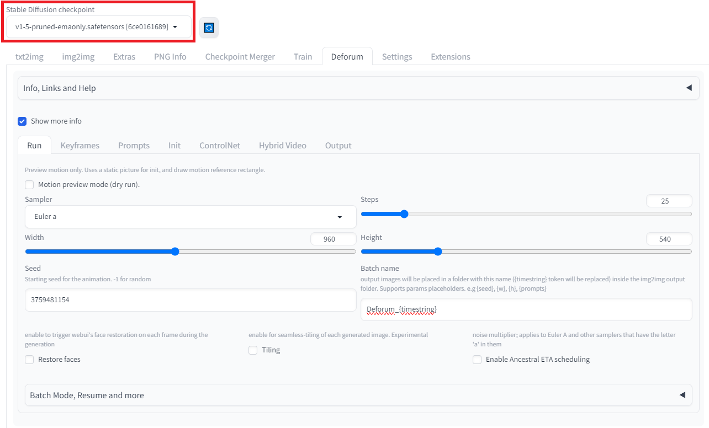

시작하기#
stable diffusion & deforum#
stable diffusion#

출처: stability ai
스테이블 디퓨전(Stable Diffusion)은 2022년에 출시된 딥 러닝, 텍스트-이미지 모델이다. 텍스트 설명에 따라 상세한 이미지를 생성하는 데 주로 사용되지만 inpainting, outpainting, image-to-image generation과 같은 다른 작업에도 적용할 수 있다. 스타트업 스태빌리티 AI(Stability AI)가 여러 학술 연구원 및 비영리 단체와 공동으로 개발했다. 무료 오픈소스로 공개되어 세계적으로 널리 쓰이고 있는 모델 중 하나이다.
본래 stable diffusion은 모델이라서 이미지를 생성하기 위해서는 코드로 구현해야 했다. A1111이나 Comfyui와 같이 WebUI 형태로 stable diffusion을 돌릴 수 있는 코드들이 공개되어, 훨씬 대중들이 사용하기 편해졌다. 따라서 stable diffusion 모델에 대한 연구나 작품들이 많이 만들어지고 있다.
deforum#

deforum은 stable diffusion을 기반으로 text-to-video 혹은 image-to-video를 수행할 수 있는 툴이다. 작동 원리는 image-to-image task를 frame별로 수행하고, 이렇게 만든 이미지들을 이어붙여서 마치 움직이는 애니메이션처럼 보이게 하는 효과를 보여 준다. deforum 또한 오픈소스 소프트웨어로 풀렸고, A1111의 stable diffusion webui에서 extension으로 다운받을 수 있는 github 저장소가 있어 무료로 deforum을 사용해서 애니메이션을 제작할 수 있다.
설치하기#
우리는 Automatic1111의 stable diffusion webui에 extention으로 구현된 deforum을 사용하기 위해,
을 설치했다.
xformers#
xformer를 설치하면 이미지 생성을 더 빨리 할 수 있다.
xformer를 설치하는 방법은 간단하다. webui.sh를 실행할 때 —xformers를 추가하면 간단하게 설치가 된다.
bash webui.sh --xformers
그 밖에 다양한 argument를 넣을 수 있는데, arguments에 대한 정보는 링크에서 볼 수 있다.
절차를 따라서 설치를 완료하면 다음과 같은 화면을 볼 수 있다.

하단에 보면 controlnet을 설치하라는 문구를 볼 수 있는데, 이것도 해당 글씨를 눌러서 설치해주면 된다.